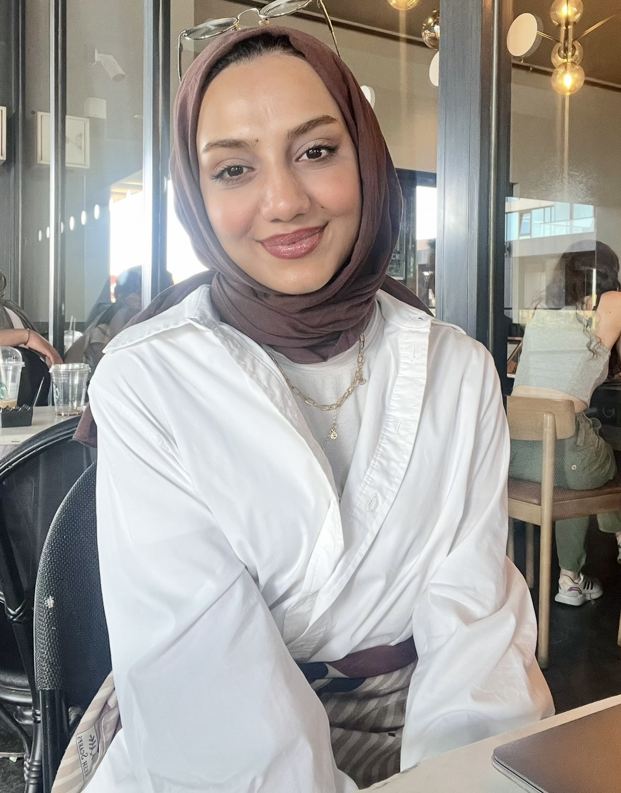
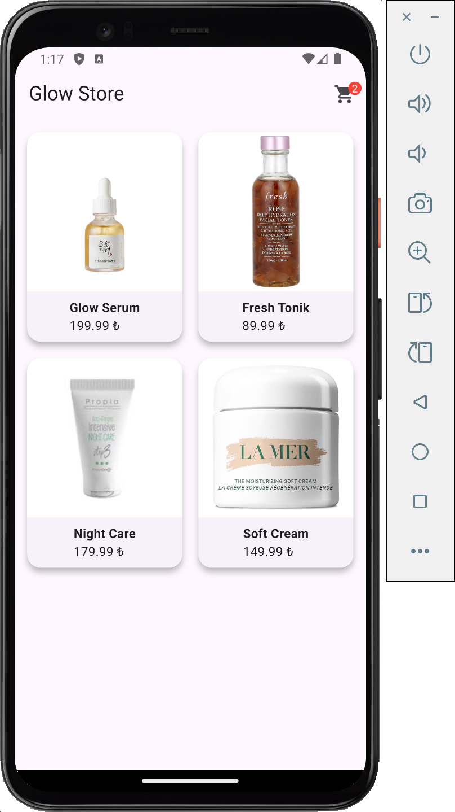

Yazılım geliştirme, bilgi teknolojileri (IT), iş analizi ve dijital dönüşüm alanlarında kendimi geliştiren bir Yönetim Bilişim Sistemleri öğrencisiyim. Teknoloji ile iş süreçlerini bir araya getirerek verimli ve yenilikçi çözümler üretmeyi hedefliyorum.

Flutter ile geliştirilen mobil e-ticaret uygulaması. Ürün listeleme, ürün detay sayfası ve sepet yönetimi özelliklerini içermektedir.
GitHub'da GörSQL, JavaScript, Figma ve Flutter mobil uygulama geliştirme alanlarında eğitimler aldım, projeler geliştirerek teknik yetkinliklerimi artırdım ve programı başarıyla tamamlayarak sertifika kazandım.
Tekstil alanında faaliyet gösteren işletmenin yönetim, operasyon ve muhasebe süreçlerini yönettim. İş geliştirme ve müşteri ilişkileri konularında deneyim kazandım.
Resmi evrak işlemleri, dosyalama ve kurumsal iş süreçlerinde görev alarak kamu kurumlarının çalışma yapısını deneyimleme fırsatı elde ettim.
Paris'te geçirdiğim süreç boyunca farklı kültürlerle çalışma, iletişim ve uyum becerilerimi geliştirdim. Uluslararası bakış açısı kazandım.